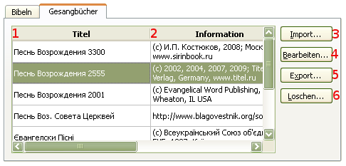
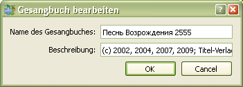

4.2 Gesangbücher-Verwaltung
Für Gesangbücher-Verwaltung:
Es erscheint ein Dialog-Fenster, in dem eine Verwaltung vorgenommen werden kann. Abkürz.: Crtl+M
softProjector kann eine unbegrenzte Zahl der Gesangbücher aufnehmen,
sowie importieren, bearbeiten, exportieren oder löschen.

Hier werden alle vorhandenen Gesangbücher in der Datenbank angezeigt.
Kurze Beschreibungen der Gesangbücher
Hinzufügen neuer Gesangbücher.
In dem geöffneten Dialog-Fenster können der Name der Gesangbücher
sowie Infromation deren geändert werden.

Exportieren eines Gesangbuches aus der Datenbank.
Es wird dringend empfohlen, eine Kopie des Gesangbuches vor dem installieren der neueren Programm-Version
zu erstellen.
Löschen eines Gesangbuches, das nicht mehr gebraucht wird. Wenn in der Datenbank nur ein Gesangbuch vorhanden ist, ist das Löschen dessen nicht möglich.